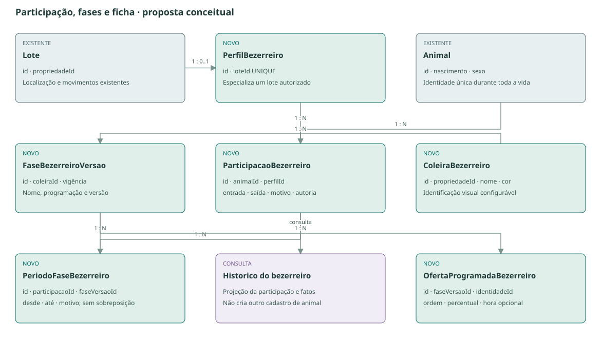
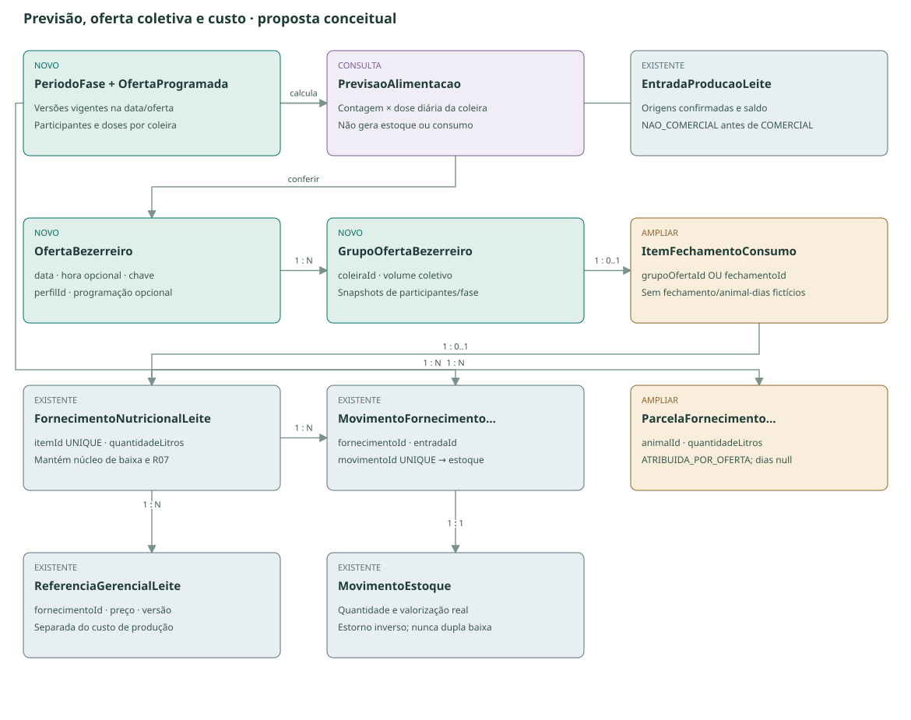
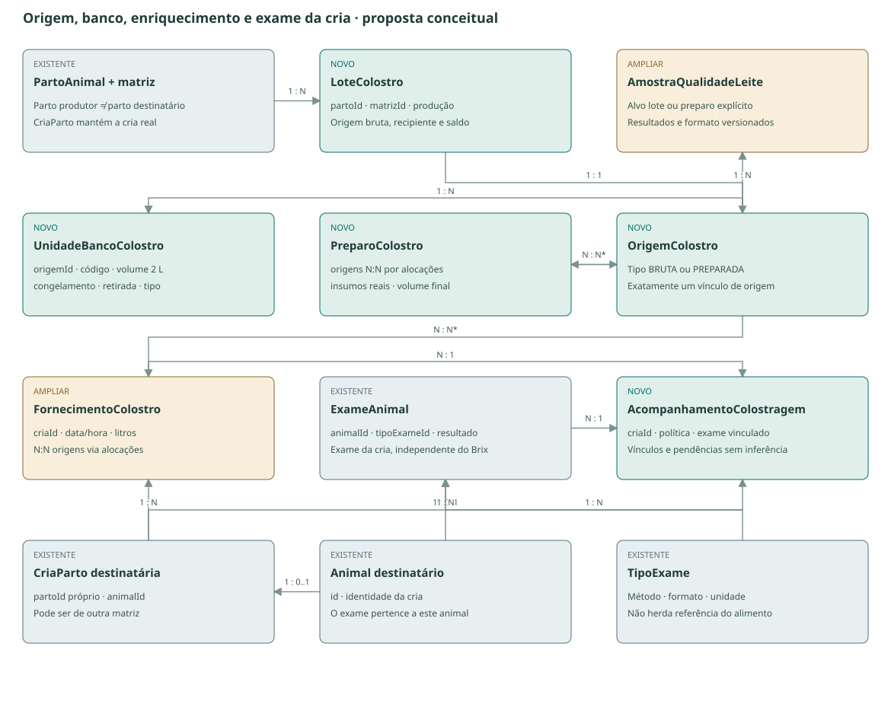

Bezerreiro, alimentação e colostro
Da entrada no lote ao histórico de criação de cada animal.
O que entregaremos
Bezerreiro como item próprio na sidebar de Pecuária, no mesmo nível de Rebanho, Sanidade e Nutrição. Suas abas principais são Animais, Alimentação, Colostragem, Sanidade e Custos; não há subitem de subitem. Participação no bezerreiro, fase de alimentação e localização são fatos relacionados, mas distintos.
| Frente | Base que existe | Evolução proposta |
|---|---|---|
| Participação e ficha | Animal, lote, localização e histórico | Perfil do lote, entrada/saída e fase; ficha especial somente quando pertinente |
| Alimentação | Nutrição por lote, baixa de leite e atribuição por animal-dias | Previsão e conferência coletiva por coleira; atribuição identificada para custos individuais |
| Colostragem | Parto/cria e fornecimento com quantidade, horário e Brix | Retirada rastreável → avaliação → destinação; meta pelo peso |
| Banco e preparo | Estoque compartilhado e qualidade versionada | Unidades congeladas de 2 L; enriquecimento com insumos e origens |
| Imunidade e sanidade | Exames, protocolos, vacinas, ocorrências e tarefas | Acompanhamento da cria e projeção desses fatos no Bezerreiro |
Como a ficha evolui
Participante atual acessa Colostragem e imunidade. Após a saída confirmada, o acompanhamento fica no Histórico do bezerreiro e na consulta de saídas. Quem nunca participou não recebe seção vazia. Exames ou colostragem recebidos na compra podem existir sem inventar uma participação.
Desmame não significa saída automática. A mudança de apresentação depende de participação registrada, não só da idade. Machos e fêmeas podem participar.
Escolhas consolidadas · 28/10/2026
Fonte: seu arquivo de decisões e confirmação no chat de que os volumes são diários. Baixar arquivo original
| Tema | Decisão |
|---|---|
| Coleiras iniciais | Vermelha 4 L, verde 2 L, amarela 0 L por animal/dia; cores, nomes e doses configuráveis. |
| Controle alimentar | Coletivo por coleira e número de participantes. A observação escrita esclarece a opção individual marcada no JSON. |
| Transição | Manual ou critérios configuráveis de peso/idade, opcionais. Limiares, combinação dos critérios e execução automática ainda precisam ser definidos. |
| Vigência da troca | Antes de oferta no dia: vale no dia. Se já houve oferta: próximo dia. Não modificar fatos realizados. |
| Colostro | Brix ≥ 25% como referência inicial configurável; fornecimento abaixo da referência ou sem Brix permite exceção com motivo e responsável. Meta de 10% do peso configurável, separada do leite diário. |
| Custos | Alimentação e sanidade usada exclusivamente nos bezerros. R07 permanece separado do custo real. |
Detalhes ainda a fechar
- Frequência, horários e distribuição das ofertas ficam configuráveis; a rotina real inicial ainda deverá ser preenchida pela fazenda.
- Limites de peso/idade, uso de ambos (E/OU), confirmação da transição e responsável pela saída.
- Para a vigência da troca, especificar se “já houve oferta” considera o grupo afetado ou todo o bezerreiro; até isso ser definido, não automatizar a mudança no mesmo dia.
- Método, unidade e janela de coleta do exame sanguíneo realmente usado pela equipe.
Estado do mockup: revisado conforme os 16 comentários: total inicial de 16 L/dia, registro coletivo por coleira, sidebar própria e banco dentro de Colostragem. Duas ofertas iguais são apenas a configuração demonstrativa inicial; quantidade, horários e percentuais podem ser alterados. As últimas anotações (Adicionar/Excluir, horário informativo e origem física contextual) já foram incorporadas à prévia integrada e à interface da aplicação. O mockup conserva dados fictícios; não comprova homologação no banco.
Como será a rotina
Previsão por animal e coleira
A fase vigente fornece uma programação versionada: litros por dia e distribuição entre ofertas. Coleira é identificação visual, com nome e cor; não substitui categoria zootécnica nem situação sanitária. O lançamento de leite comum é coletivo por coleira; não haverá conferência de litros ingeridos por animal. Colostragem continua individual e rastreável.
Necessidade = soma das programações conhecidas dos animais presentes. Sem programação é pendência, não zero. Futuro é projeção; não inferir futuros nascimentos, entradas ou mudanças de fase. A troca de fase é manual, com vigência explícita. A implementação bloqueia vigência que reescreveria uma oferta comprovada do participante; depois da última oferta, escolher o dia seguinte. Não há mudança automática no mesmo dia enquanto o alcance coletivo dessa regra estiver pendente.
Composição do leite
Usar primeiro leite não comercial disponível; completar com comercial. FIFO dentro de cada natureza, respeitando origens selecionadas e saldo confirmado. A ordenha sugere disponibilidade; não comprova alimentação nem reserva leite automaticamente.
Exemplo conforme as doses escolhidas: 3 animais com coleira vermelha × 4 L + 2 com verde × 2 L + 1 com amarela × 0 L = 16 L/dia. Com 10 L de descarte e 8 L comerciais disponíveis, a sugestão é 10 L + 6 L, sobrando 2 L comerciais. Faltando estoque, registrar somente o realizado. Colostro não completa automaticamente o leite comum. Leite fisicamente descartado não está disponível.
Conferência e confirmação
Conferir quantidade coletiva por coleira e oferta, com snapshot dos participantes e da programação. Não exigir quantidade individual nem transformar dose prevista em consumo confirmado. Atribuir custos aos participantes a partir da participação e programação comprovadas; a implementação distribui pela programação comprovada e conserva litros/centavos, identificando as parcelas como atribuídas. Quando essa base não explicar o consumo, conservar pendência em vez de inventar rateio. Um valor previsto não vira ingestão medida. Usar o mesmo núcleo de Nutrição/Estoque, sem outro fechamento baixar novamente o fornecimento já registrado. Sobra e perda têm destino próprio; preparação de mistura e fornecimento são fatos diferentes.
Colostro e exame
Parto da matriz → retirada identificada → Brix ou avaliação pendente → consumo direto, banco ou divisão. A cria pode receber colostro de outra matriz. Primeira retirada é declaração explícita. Salvar produção não confirma entrada; destinação exige saldo confirmado.
Banco aceita unidades de 2 L enriquecidas ou não, acima/abaixo da referência ou sem avaliação. Preparo usa dropdowns de origens, insumos reais e volume final medido. Enriquecimento não equivale a aprovação Brix. Retirada de embalagem não comprova seu consumo integral.
Exame da cria usa método/unidade próprios no núcleo de Exames. O teste real ainda precisa ser identificado. Brix do alimento não calcula automaticamente resultado sanguíneo. Prazo e referência clínica dependem da configuração validada pela equipe.
Exame da cria: avaliação da imunidade passiva
O consenso científico distingue a dosagem de IgG no soro/plasma e medidas indiretas, como proteína total sérica e Brix sérico. Elas avaliam transferência de imunidade após a ingestão de colostro, mas não são o mesmo exame nem usam a mesma escala. Lombard et al., 2020 — consenso publicado no Journal of Dairy Science.
Uma avaliação comparativa de cinco métodos utilizou imunoglobulina medida por imunodifusão radial como referência e avaliou refratometria como alternativa indireta. Assim, o fato de o teste ocorrer na fazenda não permite concluir que seja uma dosagem direta de IgG. Estudo comparativo dos métodos.
| Resultado registrado | Unidade a confirmar | Tratamento no sistema |
|---|---|---|
| IgG sérica/plasmática | Por exemplo g/L, conforme método/laudo | Dosagem direta, com método e amostra identificados |
| Proteína total sérica | g/dL ou g/L conforme instrumento | Indicador indireto; preservar escala original |
| Brix sérico | % Brix | Indicador indireto; formato diferente do Brix do colostro |
O consenso trata de avaliação nos primeiros sete dias de vida. A janela operacional e os limites de interpretação deverão ser configurados conforme o método adotado pela equipe, sem converter esse intervalo em prazo obrigatório por inferência.
Contrato proposto
Reutilizar TipoExame, ExameAnimal e resultados versionados. Guardar animal, data/hora da coleta, idade na coleta quando conhecida, material, método, resultado, unidade, responsável, instrumento/laboratório quando informado e eventual laudo. Vincular os fornecimentos anteriores sem presumir que um único fornecimento explica o resultado.
O título inicial será “Avaliação da imunidade passiva”. Método desconhecido fica explicitamente pendente; sem diagnóstico automático, conversão presumida para IgG ou uso do limite de 25% do alimento no sangue. Brix do colostro, preparo enriquecido e exame da cria permanecem registros independentes.
Custos do bezerreiro
Leite de descarte e comercial têm custo de produção; descarte não é gratuito. Somar custos conhecidos das origens consumidas, colostro, enriquecedores e demais alimentos; apresentar cobertura parcial onde faltarem valores.
| Medida | Como usar | O que não significa |
|---|---|---|
| Custo alimentar | Valores efetivos das origens e insumos consumidos | Não cria nova despesa financeira por transferência interna |
| Referência R07 | Preço comercial × litros; mesma referência para ambos os tipos | Não soma ao custo produtivo nem prova receita perdida do descarte |
| Custo por animal | Atribuição alimentar identificada e fatos sanitários vinculados ao animal | Não afirmar ingestão medida em consumo coletivo |
| Custo total do bezerreiro | Alimentação e sanidade usada exclusivamente em bezerros; cobertura explícita | Não ratear gastos sem base nem mostrar custo completo com lacunas |
R07 usa fechamento comprovado do mês anterior provisoriamente e revisão pelo período. Sem fonte única/selecionada, permanece pendente. Revisão de preço não muda litros ou custo produtivo. Revisão da apuração real atualiza o custo pela origem e conserva o histórico.
Custo alimentar por animal-dia precisa de permanência comprovada; custo médio do período identifica seu denominador. Histórico acumulado acompanha o animal após sair. Receita de venda e retorno produtivo futuro são estudo posterior. No consolidado da fazenda, eliminar dupla contagem de custos transferidos internamente.
Relações da implementação
Verde: entidade nova. Cinza: base existente. Âmbar: evolução de entidade existente. Lilás: consulta calculada, sem nova tabela obrigatória. A migration aditiva contém o DDL entregue. Os diagramas resumem as relações principais; schema e SQL continuam sendo a fonte exata das constraints.
Participação e fases

Lote 1 → 0..1 PerfilBezerreiro; perfil 1 → N participações; animal 1 → N participações históricas. Uma participação ativa por animal, sem intervalos sobrepostos. Participação 1 → N períodos de fase; fase versionada 1 → N períodos. Coleira 1 → N versões de fase; ofertas programadas pertencem à versão da fase. Não se presume uma fase para cada cor.
As FK não bastam: validar sítio/localização na data e transições em transação, preservando histórico. Entrada e movimentação de lote precisam de coordenação explícita, sem duplicar LocalizacaoAnimal. Mudança de configuração não reescreve fases ou previsões confirmadas.
Alimentação, origem e custos

OfertaBezerreiro possui vários GrupoOfertaBezerreiro, por coleira. O grupo liga ao ItemFechamentoConsumo e ao fornecimento leiteiro. O item aponta ao grupo OU ao fechamento legado, preservando os dois caminhos sem inventar dias. Cada MovimentoFornecimentoNutricionalLeite aponta para exatamente um MovimentoEstoque, com movimentoId único.
Fornecimento 1 → N parcelas, com animalId; fornecimento 1 → N alocações por origem; cada alocação tem uma EntradaProducaoLeite e seu movimento. ReferenciaGerencialLeite mantém N versões por fornecimento. Manter a parcela individual como ATRIBUIDA, com snapshot da programação e participantes; acrescentar agrupamento da oferta por coleira com quantidade coletiva conferida. Não criar conferência individual de leite comum; não preencher dias fictícios para satisfazer o contrato atual por animal-dias.
A previsão é uma consulta. Rascunhos não movimentam saldo. Idempotência, versões esperadas e transação impedem duas ofertas de consumir a mesma disponibilidade. Confirmar a oferta coletiva e depois fechar o lote não pode gerar a mesma baixa duas vezes.
Colostro, banco e acompanhamento da cria

N:N* sempre usa tabela de alocação com quantidade: OrigemPreparoColostro e AlocacaoFornecimentoColostro. Não usar listas de IDs em JSON para sustentar saldo. InsumoPreparoColostro aponta ao produto/partida e ao movimento de consumo existente.
OrigemColostro referencia exatamente um lote bruto ou preparo (XOR por constraint). Lote bruto referencia parto/matriz e a produção confirmada; preparo guarda origens consumidas. Unidade pertence a uma origem, volume e tipo preservados. Alocação pode referenciar unidade retirada quando aplicável. Sem saldo negativo, ciclos de preparo ou reutilização da mesma quantidade.
AmostraQualidadeLeite ganha alvo explícito de origem bruta/preparada sem duplicar avaliações. Resultados mantêm versão e unidade. ExameAnimal pertence ao animal da cria; AcompanhamentoColostragem liga política, fornecimentos e exames válidos. CriaParto identifica o destinatário; o parto produtor pode ser outro. O exame não pertence à matriz produtora por herança.
Referências de amostra, origem e unidade devem preservar contexto e autoria. Confirmar destinação dividida é atômico: alimentação e congelamento são concluídos juntos ou nenhum é gravado. Retirada, avaliação, preparo e destinação continuam comandos separados e retomáveis.
Garantias SQL entregues · aplicação pendente
- FK e escopo de sítio nas relações; unicidade da participação ativa e intervalos sem sobreposição.
- Volume Decimal; alocações conservam litros; saldo e confirmações revalidados sob concorrência.
- Vínculo único de primeira retirada por parto/matriz e embalagem sem nova produção.
- Políticas, fases e regras de alimentação versionadas com snapshots nos fatos.
- Correções e estornos auditáveis; eventos antigos permanecem consultáveis.
- Novo SQL aditivo: não reescrever a baseline aplicada nem inferir histórico ausente.
Revisão dos 16 comentários do mockup
| Comentários | Direção incorporada |
|---|---|
| 1–4 · Configurações | Ajuda em tooltip, coluna de cor compacta; seções próprias para aleitamento/coleiras, referência do exame Brix e referência de volume do colostro. Brix ≥ 25 e exceções já estão definidos. |
| 5–8 · Navegação e consulta | Item Bezerreiro na sidebar; presentes separados do histórico de saídas. Busca, ordenação e filtros de coleira/fase com rascunho, Aplicar/Cancelar e critérios ativos. |
| 9–10 · Alimentação | Volumes coletivos por coleira. Cards de origem mostram disponibilidade, uso e saldo. Frequência, horários e distribuição diária configuráveis; soma das parcelas precisa ser 100%. |
| 11 · Acompanhamento | Detalhe acessível dentro do Bezerreiro com botão Ver na ficha animal; a ficha oferece o acesso inverso ao mesmo acompanhamento. Histórico permanece após saída. |
| 12–14 · Colostragem e banco | Remover cards ilustrativos do fluxo e abas Banco/Preparações. Banco abaixo da tabela de colostragem; Enriquecer é ação de uma origem não enriquecida registrada. Aceita entrada de unidade enriquecida quando vinculada a enriquecimento já registrado. Origem sem enriquecimento mantém sua tipagem. |
| 15–16 · Sanidade | Ação principal Registrar ação sanitária; cada animal da tabela abre seu acompanhamento. A implementação reutilizará o núcleo e os formulários de sanidade, sem duplicar protocolos ou fatos. |
O formulário sanitário da prévia é resumido e registra somente dados fictícios. O enriquecimento simulado retira a unidade de origem do banco e cria uma origem enriquecida com volume final medido, disponível para destinação. Congelar 2 L não descarta a sobra. Insumos e custos do enriquecimento ainda não movimentam o estoque desta prévia.
Os novos agrupamentos são de navegação: banco, avaliação do alimento, fornecimento e exame da cria continuam entidades e fatos distintos. URLs antigas de banco/preparos abrem Colostragem. Regras de vigência depois de uma oferta são demonstradas com agendamento para o dia seguinte; a prévia tem data fixa e não executa a virada de dia.
Plano de implementação consolidado
Revisão de 28/10/2026. Incorpora as decisões exportadas, os 16 comentários e as três novas anotações. Implementação em GPT-6.1 Sol; revisão independente final em GPT-6 Astra. Os pacotes foram executados após autorização no chat; a revisão independente Astra confirmou os reparos apontados. Testes/builds e homologação real são evidências distintas.
Mockup como referência obrigatória
A interface implementada deverá seguir o mockup revisado e aprovado: navegação, organização das telas, cores, tipografia, espaçamentos, tabelas, filtros, botões, modais e percursos. Reutilizar os componentes compartilhados do aplicativo para reproduzir essa composição. Não substituir o desenho por uma interpretação livre nem transportar dados fictícios e simplificações da simulação como regras de domínio.
C00 incorpora as últimas anotações e integra as duas prévias antes da implementação visual. C05/C06 implementam a versão aprovada. Mudanças materiais em relação a ela exigem revisão do mockup com o usuário antes de serem implementadas. Na revisão C07, Astra deverá comparar a aplicação no navegador com a referência aprovada, em desktop e celular, e registrar divergências; C08 corrige os desvios antes da entrega. Capturas e fluxos conferidos devem acompanhar a validação, sem substituir os testes funcionais.
Últimas anotações: ofertas e origem do colostro
| Ponto | Comportamento planejado |
|---|---|
| Adicionar e excluir ofertas | Botão Adicionar oferta à direita do título. Cada linha possui identificação/ordem, horário de referência opcional, parcela diária e Excluir. Quantidade de ofertas é derivada das linhas, sem campo numérico que recria a lista. Adicionar não altera linhas existentes; nova linha inicia sem horário e sem percentual. Remover não redistribui volumes silenciosamente. |
| Horário não limitante | Horário previsto é uma referência opcional. Data e horário ocorrido são fatos separados. Fornecimento pode acontecer fora do horário, sem horário conhecido ou sem uma oferta prevista associada. Horário não é chave única, limite de execução ou prova de duplicidade. Quando desconhecido, permanece nulo; nunca preencher meia-noite por conveniência. |
| Recipiente segregado | Origem é o parto/matriz e a retirada, vinculada à produção. O recipiente identifica o local físico, não a origem biológica. Se a produção já existe, herdar tanque/recipiente e sua versão. Se a retirada gera nova parcela, selecionar Tanque cadastrado ou Outro recipiente; apenas neste último caso identificar o recipiente. Rótulo operacional: Onde foi armazenado nesta retirada? Sem cadastro novo obrigatório ou nome fictício automático. |
A programação ativa distribui 100% do volume diário entre suas ofertas. Enquanto incompleta, pode ser rascunho, sem previsão completa. Uma rotina sem ofertas ativas só é coerente com dose diária zero; uma rotina com dose positiva precisa de pelo menos uma oferta. Horários iguais são permitidos. Excluir uma linha já usada cria nova versão da programação, sem apagar ocorrências anteriores.
Limite do protótipo atual: o controle numérico foi substituído por Adicionar/Excluir; horário é opcional, a oferta tem ID estável e o fluxo de colostro usa o mesmo estado. Estes reparos foram entregues no C00 e refletidos na interface.
Um único percurso: parto → retirada → Brix → destino
- No detalhe do parto ou em Colostragem, iniciar Registrar retirada. Selecionar parto já existente preenche matriz; não criar parto fictício para satisfazer o fluxo.
- Escolher produção existente compatível ou registrar nova retirada. Conferir sítio/localização, origem animal, quantidade disponível e vínculos anteriores. Uma retirada física não gera produção duas vezes.
- Salvar a retirada conserva seu vínculo ao parto, primeira/seguinte declarada, data, volume, autoria e origem física. Confirmação de estoque permanece explícita e idempotente; volume ainda não confirmado não está disponível para destinação.
- Registrar Brix ou deixá-lo pendente. Manter resultado original, data, formato e política aplicada. Enriquecer não comprova Brix adequado.
- Destinar para cria, banco ou ambos, com conciliação de volume. Fornecimento individual de colostro não se confunde com aleitamento coletivo por coleira. A cria destinatária pode ser de outro parto.
- Congelar unidades de 2 L a partir do volume livre. Banco mostra tipo enriquecido/não enriquecido e Brix separadamente; sobra continua livre na origem, sem arredondamento para outra unidade.
- Enriquecer parte de origem existente, registra quantidades consumidas, insumos do estoque, responsável e volume final medido. Nova origem enriquecida conserva todas as relações anteriores; não editar apenas a tipagem da origem consumida.
- Banco, retirada no parto, acompanhamento do bezerro e ficha animal consultam os mesmos fatos. Histórico e antigas URLs chegam ao destino equivalente.
Histórias de uso e escopo
- Como responsável pelo bezerreiro, quero acessar animais presentes e saídas separadamente, para não misturar rotina e histórico.
- Como tratador, quero consultar coleira e fase, para prever o leite necessário ao grupo.
- Como gestor, quero configurar coleiras e doses diárias, para adaptar o manejo sem apagar programações usadas.
- Como gestor, quero adicionar/excluir ofertas e informar horários opcionais, para representar a rotina real.
- Como tratador, quero registrar o volume coletivo realizado, inclusive fora do previsto, para conservar o fato sem inventar ingestão individual.
- Como responsável, quero utilizar descarte disponível e completar com comercial, para atender a necessidade com origens e saldo comprovados.
- Como responsável pelo parto, quero registrar ou vincular a retirada de colostro, para rastrear sua matriz sem duplicar produção.
- Como responsável, quero avaliar Brix e dividir a destinação, para acompanhar consumo direto e banco.
- Como responsável, quero congelar unidades e enriquecer uma origem registrada, para conservar volume, sobras, ingredientes e tipagem.
- Como técnico, quero registrar exames, ocorrências, protocolos e vacinas no bezerreiro, para acompanhar sanidade usando os fatos comuns.
- Como usuário, quero acessar o mesmo acompanhamento na ficha e no bezerreiro, para manter a continuidade após a saída.
- Como gestor, quero separar custo efetivo, cobertura e referência R07, para não tratar preço de venda como custo ou duplicar despesa.
- Como operador, quero retomar falhas, corrigir e estornar com histórico, para não perder trabalho ou repetir baixas.
- Como usuário com acesso restrito, quero consultar apenas sítios e informações autorizados, para respeitar os limites também nas respostas do servidor.
Contratos e persistência
| Domínio | Decisão para implementação |
|---|---|
| Participação e programação | PerfilBezerreiro especializa Lote; ParticipacaoBezerreiro mantém intervalo por animal. Coleira, fase e programação versionadas. OfertaProgramada possui ID estável, ordem, percentual e horário previsto opcional; uma remoção não invalida referências históricas. |
| Oferta realizada | ID próprio, sítio, data civil, ocorridoEm opcional, horário estimado quando declarado, referência opcional à oferta programada e versão. Grupos por coleira com volume coletivo e snapshot dos participantes/fase. Vínculos com o núcleo nutricional preservam uma única baixa. |
| Atribuição individual | Parcelas individuais são ATRIBUIDAS. Dentro de um grupo de mesma dose, usar participantes comprovados e conservar litros/centavos; entre coleiras, usar os volumes reais de cada grupo. Se não existir base, deixar custo individual a apurar. Não gravar dias fictícios para satisfazer a estrutura atual. |
| Retirada de colostro | LoteColostro vincula parto produtor, matriz, medição/produção e entrada confirmada. Definir cardinalidade/unicidade para impedir que uma parcela vire duas origens disponíveis. Fonte geral ou individual deve preservar o vínculo existente; nunca somar ambas. Origens históricas sem parto permanecem legíveis e pendentes de reconciliação, sem vínculo presumido. |
| Origem física | Reutilizar TanqueLeite/MedicaoGeralLeite e snapshots. Outro recipiente continua identificado quando exigido pelo núcleo de produção. Revisar Zod, serviço e SQL em conjunto se o adaptador exigir evolução; preservar segregação entre naturezas e bloquear tanque/recipiente duplicado indevidamente. |
| Banco e enriquecimento | OrigemColostro aponta a lote bruto ou enriquecimento, exclusivamente. UnidadeBancoColostro registra volume de 2 L, origem e histórico de situação. Enriquecimento possui alocações de entrada e insumos com quantidades; volume final medido pode diferir do volume inicial. Não recongelar uma unidade retirada por simples troca de status. |
| Qualidade e acompanhamento | Ampliar os alvos de amostra com integridade explícita para bruto/enriquecido. Reutilizar FornecimentoColostro e ExameAnimal, sem duplicar resultados. Avaliação Brix do alimento e avaliação de imunidade da cria têm configurações, métodos e unidades independentes. |
| Comandos e consultas | Rotas de configurações versionadas, participantes/presentes/saídas, previsão, ofertas, retiradas por parto, origens/unidades, enriquecimentos, destinações e acompanhamento. Leituras paginadas com totais do recorte. Comandos com chave idempotente, payload conferido e versão esperada; nomes finais fixados no C00. |
Salvar rascunho não baixa estoque. Cada confirmação que cria múltiplos fatos é atômica; destinação dividida não pode concluir apenas uma metade. Conflito conserva dados de tela e pede nova conferência. Duplicidade é tratada por ID do comando e vínculos de negócio, nunca apenas por horário. Registro sem hora conserva precisão de dia e não comprova ordem intradiária; cronologia conhecida continua validada.
Entrada, consumo, congelamento, enriquecimento e estorno deverão obedecer à conservação de saldo. Unidades são apresentação física do mesmo colostro, não estoque paralelo. Insumos consumidos no enriquecimento integram o custo de sua nova origem sem duplicar custo do colostro ou caixa. Sanidade inclui somente gastos vinculados aos bezerros; custo alimentar usa descarte e comercial consumidos. R07 é informação gerencial separada.
O que reaproveitar e o que construir
Verificado no checkout e1391b77: Lote/Animal e localização; FornecimentoColostro vinculado à cria; MedicaoGeralLeite com tanque ou recipiente; TanqueLeite versionado; FornecimentoNutricionalLeite ligado a ItemFechamentoConsumo; movimentos e parcelas nutricionais; exames e formatos versionados. A implementação acrescenta perfil/participação do Bezerreiro, coleiras/fases, ofertas coletivas específicas, retirada vinculada ao parto como origem rastreável, banco de unidades e enriquecimento. O contrato vigente registra as regras entregues; os pacotes abaixo conservam a referência da execução.
Inspeção incluiu schema.prisma, tanques.schemas.ts, parcelas-contexto.ts, parcelas.sql.test.ts, parcelas.integration.test.ts e a garantia MedicaoGeralLeite_recipiente_declaracao da baseline aplicada. Isso comprova contratos do código inspecionado, não estado ou homologação do banco local.
Decisões que não serão inventadas
- Transição por idade/peso: construir configuração opcional e ação manual. Limiares, combinação E/OU e automação só serão ativados quando definidos.
- Vigência após oferta: conservar a decisão dia atual/seguinte, mas fechar o alcance de “já houve oferta” (grupo afetado ou bezerreiro todo) antes de ativar essa automação. Não transportar silenciosamente a simplificação global do mockup.
- Exame de sangue: construir registro configurável sem presumir IgG direto, proteína total ou Brix sérico. Interpretação e janela dependem do método confirmado.
- Receita/dose clínica de enriquecimento e regras de conservação não serão inventadas. Produto, quantidade e volume final serão registros operacionais.
Fora desta execução
A execução autorizou implementar o código e entregar migration aditiva. Aplicar migrations localmente, carregar seed, criar sítios, resetar dados e fazer deploy permanecem fora desta execução. Publicação do PR e merge foram autorizados posteriormente, condicionados à revisão e à CI. A compatibilidade do preflight da seed foi atualizada para validar a cadeia sem trocar a identidade do manifesto. Lucratividade futura, receitas clínicas automáticas e sincronização IDEAGRI permanecem fora do escopo.
Execução: Sol na implementação, Astra na revisão
Coordenador em GPT-6.1 Sol / alto. Até três trabalhadores simultâneos, além dele. Um responsável por schema/migrations; um por navegação e contratos compartilhados. Astra recebe o resultado integrado para revisar e não implementa os pacotes.
| Pacote | Modelo / esforço | Entrega e propriedade | Dependência |
|---|---|---|---|
| C00 · Contratos e prévia | Sol 6.1 / alto | Inventariar branch/main e alterações locais; fechar DTOs, URLs e estados. Unificar a experiência das duas prévias, trocar quantidade por Adicionar/Excluir e desvincular oferta do horário. Delimitar arquivos por agente e registrar diferenças para aprovação visual. | Início |
| C01 · Persistência | Sol 6.1 / alto | Único escritor de schema, migration e garantias SQL. Participação, configuração, ofertas, origens, unidades, enriquecimento e alocações; compatibilidade histórica sem backfill presumido. | C00 |
| C02 · Aleitamento e custos | Sol 6.1 / alto | Serviços e testes de previsão coletiva, oferta real, snapshots, atribuição e referência R07. Adaptar item nutricional sem dias fictícios ou duplicação de fechamento. C00 integra mudanças no núcleo de estoque. | Contratos C01 |
| C03 · Colostro e banco | Sol 6.1 / alto | Serviços e testes de vínculo ao parto/produção, Brix, consumo direto, banco, enriquecimento e estorno. Consumo e destinação atômicos; origem física herdada. | Contratos C01 |
| C04 · Ficha, exames e sanidade | Sol 6.1 / alto | Consultas de acompanhamento, ficha condicional, histórico e adaptação do núcleo de Exames/Sanidade; permissões e unidades independentes do Brix do alimento. | Contratos C01/C03 |
| C05 · Interface do bezerreiro | Sol 6.1 / médio | Sidebar, presentes/saídas, filtros, configurações, aleitamento e custos. Reutilizar componentes de Rebanho/Nutrição; estado de rascunho e recuperação. Nenhuma regra de domínio duplicada no cliente. | C02 e prévia aprovada |
| C06 · Interface colostragem | Sol 6.1 / alto | Registro pelo parto, retirada/Brix/destinação, banco abaixo da colostragem, Enriquecer e acompanhamento/ficha. Coordenador controla router, sidebar e arquivos comuns. | C03/C04 e estrutura C05 |
| C07 · Revisão integrada | GPT-6 Astra / alto | Revisão independente do diff, regras de produto, schema/SQL, contratos, concorrência, valores ocultos e evidências. Achados por gravidade, localização, reprodução e critério de reparo. Não editar implementação. | C01–C06 integrados e verificados |
| C08 · Correções e entrega | Sol 6.1 / médio; alto para domínio | Autores corrigem seus arquivos; coordenador executa testes focais, atualiza contratos/mockup e prepara relatório. Astra confirma somente reparos relevantes aos achados, sem repetir revisão completa por rotina. | C07 |
Ordem: C00 → C01/contratos → C02 + C03; C04 entra após seus contratos. C05 e C06 avançam com backend estabilizado, sem ultrapassar três trabalhadores. C07 recebe uma única entrega integrada. Arquivos de estoque e roteamento não terão escritores concorrentes.
Controle de tokens: cada agente recebe o pacote, invariantes, arquivos proprietários e DTOs necessários, não todo o histórico do chat. Sol médio para composição visual estável; alto para integridade de domínio. Astra revisa o diff integrado e as evidências, com aprofundamento nos riscos, sem refazer a implementação. Não são estimativas de preço ou promessas de economia.
Critérios para aprovar a entrega
- Animal sem passagem não ganha área vazia; animal que saiu conserva histórico, inclusive correções posteriores.
- Fase vigente altera previsão; falta de programação é pendência; nenhuma previsão baixa estoque.
- Descarte disponível tem prioridade; falta de saldo impede confirmação fictícia; colostro não completa leite comum.
- Litros coletivos conferidos e parcelas individuais atribuídas são distinguíveis; custo não usa rateio uniforme entre coleiras diferentes.
- Custo real e R07 permanecem separados; usuários sem permissão não recebem valores nos DTOs.
- Salvar/confirmar/repetir/estornar preservam atomicidade e rastreabilidade, sem dupla baixa entre Nutrição e Bezerreiro.
- Origem sem custo permite volume real, mas deixa custo a apurar; gasto compartilhado sem vínculo não vira rateio automático.
- Banco conserva unidades, saldos e sobras; enriquecimento não fabrica Brix nem exame da cria.
- Testes unitários, contratos e revisão visual distintos de integração real e homologação na fazenda.
Banco local autorizado: somente fazendinha_seedatev3, com fixtures próprias, após autorização de migration. Sem reset, novo sítio ou deploy nesta etapa. R2 real e CI remoto têm validação própria.
Aceite adicional das últimas anotações
- Adicionar oferta conserva os valores existentes; excluir só remove a linha escolhida. Salvar uma versão não apaga ofertas passadas. Percentuais incompletos permanecem rascunho; rotina ativa fecha 100%.
- Horário previsto vazio/igual ou execução fora do horário não bloqueiam fornecimento. Duas ofertas legítimas no mesmo horário são possíveis; reenviar a mesma chave não repete a baixa.
- Hora desconhecida não vira 00:00 nem gera conclusão de cronologia intradiária. Datas anteriores a nascimento/origem conhecida continuam inválidas.
- Vincular retirada à produção existente não cria outros litros; tanque/recipiente herdado conserva versão e segregação. Sem produção existente, o seletor físico usa os contratos atuais e não cria cadastros fictícios.
- Simular integralmente: parto existente → retirada 6 L → Brix 27 → 4 L à cria + 1 unidade de 2 L; mesmo registro visível no parto, acompanhamento e banco.
- Enriquecimento com volume final medido de 2,2 L permite congelar 2 L e conserva 0,2 L livre; Brix pendente permanece pendente. Não inferir receita ou dose a partir do exemplo.
- Integração de Nutrição, sanidade e custos conserva centavos, cobertura e verValores, inclusive endpoints auxiliares. Confirmar a oferta e fechar a nutrição depois não repete o consumo.
Validação por etapa
C02/C03 exercitam regras pelos serviços e contratos HTTP existentes, com cálculos puros para conservação e distribuição. C01 acrescenta checks de SQL e integração isolada para unicidade, constraints e concorrência. Interface cobre teclado, desktop/celular, filtros Aplicar/Cancelar, histórico de navegação, rascunho, carga/vazio/erro e conflito. Rodar typechecks/builds dos workspaces afetados, uma vez estabilizados.
Integração real somente em fazendinha_seedatev3, com fixtures próprias e revisão da limpeza, após autorização de aplicar a migration. Sem essa etapa, a entrega registra explicitamente “banco não homologado”; testes simulados não a substituem. Revisão Astra não equivale a aprovação de deploy. Bloqueadores de integridade, segurança ou fluxo principal devem ser reparados antes de declarar a implementação pronta.
Limites desta prévia
O mockup integrado simula 28/10/2026 e as coleiras escolhidas, com duas ofertas iguais inicialmente configuradas. A sessão v4 preserva os cenários anteriores e une parto, retirada, Brix, destinação e banco. Dados ficam no sessionStorage da aba. O protótipo anterior de colostro permanece como referência histórica; o percurso vigente está integrado ao mockup do Bezerreiro. O schema entregue não foi aplicado no banco. Lucratividade, previsão de futura lactação, receitas clínicas de enriquecimento, validade térmica e prescrição sanitária não estão incluídas.
Revisões e complementos
Formulário iniciado com as escolhas consolidadas de 28/10. A anotação sobre controle coletivo prevalece sobre a opção genérica individual marcada no arquivo. Edições anteriores permanecem preservadas na chave antiga do navegador; esta revisão usa uma chave nova. Exporte o JSON para compartilhar novas alterações.
Fontes e continuidade
Base inspecionada: schema.prisma; serviços de leite/nutricao, nutricao/atribuicao, referencias, reproducao/colostro e sanidade/exames; contratos de Leite e Protocolos/Exames. Existência de código e testes não equivale a homologação do banco atual.
Este planejamento amplia o plano anterior de colostro: inclui Bezerreiro, coleiras, previsão alimentar e exame da cria. As escolhas recebidas confirmam comparação Brix inclusiva (≥ 25%, configurável) e exceção por motivo e responsável; não se trata de liberação sanitária. O restante do fluxo de retirada/Brix/banco/preparo é preservado.